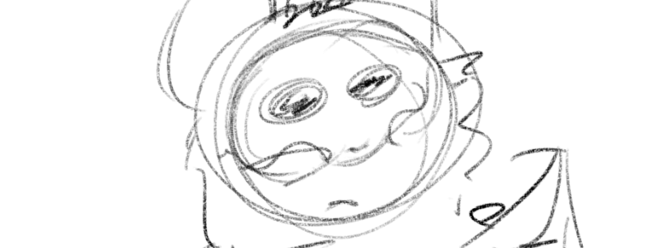

In china there has been spotted humanoid-animal figures, walking on 2 legs, yet they were animals.
None of us can actively verify the existence of these creatures,
We're trying to prove that the images were photoshopped.
This website has been made in case these creatures were real.
A humanoid figure was spotted in the cities, living a human life.
The following image shows a drawing of what it looks like:

People believe this thing? It's stupid, it's just a sketch.
Request of closing the investigation sent 10:20 PM.
Request denied 10:30 PM.
Request to show photos publically denied.
"No photos of the creature must be leaked yet"
Reopened request to close investigation sent 10:45 PM.
Investigation closed 11:00 PM.
The investigation into the mysterious creature has been closed. No concrete evidence of the creature's existence has been found.
Causes unknown.
Missing person: Clara Williams
last seen: February 12th, 2025, near mountain's range.
Request to close PROJECT XABSINUGI sent at 10:50 PM.
Request got taken in consideration at 11:00 PM.
Request rejected at 11:50 PM.
The investigation into the mysterious creature has been closed. No concrete evidence of the creature's existence has been found.